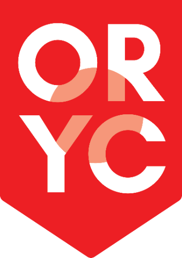

Ottawa Regional Youth Choir: Young Ottawa voices, 15–25.

Duruflé's Requiem
- Time
- 3:00 pm
- Place
- St. Barnabas Apostle and Martyr, 70 James St.
Requiems are often heavy, but Duruflé's take is different. It is built entirely on warmth, comfort, and floating melodies…
No auditions. Just sing.
Every new chorister begins with a short voice placement with our Artistic Director, Jamie Loback. It helps our team become familiar with your voice and determine how best to support your musical development. There is nothing to prepare.
- Tuesdays at 6:45 pm
- Ages 15–25
- All voice types welcome
Season at a glance
The bridge between children's choirs and adult ensembles
Barbara Clark, C.M., founded the Ottawa Regional Youth Choir in 1982, and the choir was incorporated the following year. More than four decades later, the ORYC remains one of Canada's leading youth choirs and a bridge between children's choirs and adult ensembles.
Our historyORYC on CTV
CTV News Ottawa has featured the ORYC twice: ahead of our spring concert in April 2026, and in April 2025, as the choir prepared Monteverdi's L'Orfeo, the oldest opera still performed today.
More on our YouTube channelKeep young Ottawa singing
Donations, volunteer hours, and sponsorships keep the ORYC open to every young singer who wishes to join.
Donate
Donations over $25 receive a tax receipt, and Zeffy passes 100% of every gift to the ORYC.
DonateVolunteer
Ushers, stagehands, box office, photography, grants, IT, communications, and marketing.
VolunteerSponsor
Support the Inclusion Fund, the music retreat, guest musicians, concert production, or new music.
Sponsor